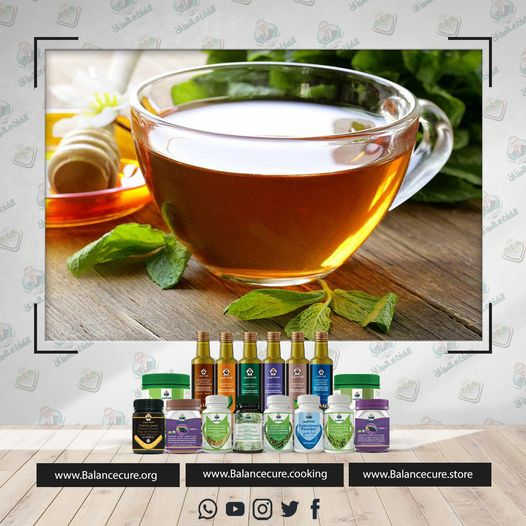



لكل محبي الشاي سواء الأحمر او الاخضر اليكم هذه المعلومات المفيدة و الجميلة عن الشاي و لكن تذكروا اعتدلوا في تناول هذا المشروب اللذيذ .
* #الشاي الأخضر أو الأحمر له تأثير مضاد لكثير من الفيروسات ومنها فيروس الهربس.
* له تأثير  #مضاد للبكتيريا ولذلك فنحن نستخدمه كقطرة في حالات #التهاب حواف الأجفان البسيطة بنتائج طيبة وهذا الاستخدام هو علمي ولكنه مبني على وصفة تقليدية شعبية قديمة في بلاد الشام وهي استخدام الشاي المر كقطرة في العين , ولم يثبت دور الشاي لأي من #أمراض_العيون المختلفة مثل الزرق أو الساد بالرغم من تأثير الشاي المضاد للأكسدة وأن عملية الساد تزداد سبب عملية الأكسدة ولكن لا توجد دراسات تثبت دوره المضاد لذلك إلى الآن.
وجود #مواد فعالة في الشاي تعتبر واقية من تلك السرطانات , ومن هذه #السرطانات ,سرطان الفم والبلعوم والمريء و البروستات و سرطان البنكرياس  والمثانة والجلد والرئة والقلون والثدي عند النساء وكذلك سرطانات الكبد كما أشارت هذه الدراسات إلى دور الشاي الواقي من عودة السرطانات بعد استئصالها و إلى تقليل حدوث انتشارات في الداء السرطاني.
*من يستهلكون الشاي بكثرة وخصوصا الأخضر هم أقل عرضة للإصابة بتصلب الشرايين.
** اخوتي الأحباء  بعد قراءتكم لهذه المعلومات 
لا تنسوا  أن تعتدلوا في شرب الشاي  يكفيكم  كوبين صغيرين من الشاي يوميا حفاظا على صحتكم .
اخوكم د جميل القدسي

بارك الله فيك دكتور جميل على هذه النصائح. هل صحيح أن التمر غذاء دكتور جميل؟؟ قرأت مرة عن ريجيم التمر و اللبن لإنقاص الوزن .
 هل يمكن أن تفيدنا دكتور جميل و بارك الله لك في علمك و جازاك الجنة بغير حساب .
 إذا كان قصدكم أنه غذاء كامل , نقول نعم هو غذاء شبه كامل , ينقصه بعض العناصر القليلة جدا ليصبح غذاءا كاملا وقد كان رسول الله صلى الله عليه وسلم يعيش عليه شهرين متتابعين " عَنْ عَائِشَةَ ، أَنَّهَا قَالَتْ : " كَانَ يَمُرُّ بِنَا هِلالٌ وَهِلالٌ مَا يُوقِدُ فِي بَيْتٍ مِنْ بُيُوتِ رَسُولِ اللَّهِ صَلَّى اللَّهُ عَلَيْهِ وَسَلَّمَ نَارٌ ! " ، قَالَ : قُلْتُ لِخَالَتِي : عَلَى أَيِّ شَيْءٍ كُنْتُمْ تَعِيشُونَ ؟ قَالَتْ : " عَلَى الأَسْوَدَيْنِ : الْمَاءِ وَالتَّمْرِ " رواه أحمد بالنسبة لريجيم التمر واللبن بالرغم من غنى اللبن والتمر بالعناصر , وبالرغم من ذكرهما في السنة المطهرة والقرآن العظيم , إلا أنني لم أرى بحثا سريريا يثبت هذه الطريقة أو ينفيها , كما أنني من ناحية نظرية أرى أن القرآن حيث على تنوع الطعام عندما قال " فأنبتنا فيها حبا وعنبا وقضبا وزيتونا ونخلا وحدائق غلبا وفاكهة وأبا " عبس " وكذلك قوله تعالى " وَهُوَ الَّذِيَ أَنزَلَ مِنَ السَّمَاء مَاء فَأَخْرَجْنَا بِهِ نَبَاتَ كُلِّ شَيْءٍ فَأَخْرَجْنَا مِنْهُ خَضِرًا نُّخْرِجُ مِنْهُ حَبًّا مُّتَرَاكِبًا وَمِنَ النَّخْلِ مِن طَلْعِهَا قِنْوَانٌ دَانِيَةٌ وَجَنَّاتٍ مِّنْ أَعْنَابٍ وَالزَّيْتُونَ وَالرُّمَّانَ مُشْتَبِهًا وَغَيْرَ مُتَشَابِهٍ انظُرُواْ إِلِى ثَمَرِهِ إِذَا أَثْمَرَ وَيَنْعِهِ إِنَّ فِي ذَلِكُمْ لآيَاتٍ لِّقَوْمٍ يُؤْمِنُونَ " ( 99) الأنعام لاحظ القرآن دائما يجمع الأطعمة ولا تجد آية واحدة فيها طعامين إثنين فقط ولذلك أرى من ناحية نظرية أنه لا يتوافق مع القرآن الكريم والله تعالى أعلم .
أخوكم د جميل القدسي


"سالني الكثير من المتابعين عن تفسير ""ما افتقر بيت فيه خل "".
** واقول :هذا تفسيري لهذه النقطة الإعجازية بفضل الله تعالى , الخل مثلا يعتبر غذاء كامل العناصر , فالخل من ناحية كيميائية هو الأستيك أسيد , والأستيك أسيد هذا هو مادة وسيطة في استقلاب الكربوهيدرات والبروتينات والدهون , وهذا يعني أن الكربوهيدرات اثناء استقلابها في داخل الجسم وأثناء تفككها تتحول إلى ما يعرف باسم حمض الخل أو الأستيك أسيد وكذلك الدهون تتفكك اثناء استقلابها في داخل الجسم لحمض الخل وكذلك البروتينات والأحماض الأمينية تتفكك اثناء استقلابها في داخل الجسم, إلى الأستيك أسيد والعملية هذه عملية عكوسة , وهذا يعني أنه من حمض الخل ( الأستيك أسيد ) يمكن أن أصنع الكربوهيدرات ويمكن أن أصنع البروتنيات و ويمكن أن أصنع الدهون كذلك , وهذا يعني لو كنت فقيرا وكان عندي خبز ( كربوهيدرات ) وزيت ( دهون ) فقط ولم يكن عندي لحم( بروتينات ) وأكلت خلا مثل خلنا , فإن هذا الخل سيدخل إلى الجسم ويصنع البروتينات التي لم نأكلها في غذائنا .
*  فتخيل , من أجل هذا من الله علي وكتبت نقطة إعجازية في هذه الشأن تتعلق بحديث رسول الله صلى الله عليه وسلم ""نعم الإدام الخل , ما افتقر بين فيه خل "" رواه ابن ماجة , ومن ناحية غذائية هذا صحيح لأن الخل يستطيع أن يصنع كافة الكربوهيدرات والبروتينات والدهون في الجسم , ولذلك نقول أن منتجاتنا هي غذاء لوجود الخل والزيت فيها وهي في نفس الوقت مكمل غذائي لوجود الخلاصات العشبية الغنية بالمعادن والعناصر , ولكن السؤال هنا من يطيق أن يعيش على الزيت والخل طوال عمره ولماذا نحرم أنفسنا من الطعام الذي يحتوي على المواد الغذائية الأساسية , إذ إنه يجب التمييز بين الغذاء والمكملات الغذائية , فالغذاء هو الطعام الذي يحتوي على الكربوهيدرات والبروتينات والدهون وهي المركبات الأساسية التي يبنى منها الجسم وخلايا الجسم , ولكن المكملات الغذائية تشمل الفيتامينات والمعادن والمواد العفالة والعناصر الموجودة أيضا في خلاصات الأعشاب في منتجاتنا وهي المواد التي تنشط عمل التفاعلات الحيوية سواء أكانت تفاعلات البناء أي بناء الخلايا أو التفاعلات الوظيفية .
* ومن هنا كان هذا المفهوم واضحا في القرآن الكريم فالله تعالى ذكر غذاء ثم غذاء ثم غذاء ثم أعشابا ( ومكملات غذائية ) تأمل ذلك معي في هذه الآيات الكريمة "" وَالْأَرْضَ وَضَعَهَا لِلْأَنَامِ ( 10) فِيهَا فَاكِهَةٌ وَالنَّخْلُ ذَاتُ الْأَكْمَامِ ( 11) ( والفاكهة والنخل هنا هما من الغذاء ) وَالْحَبُّ ذُو الْعَصْفِ ( وهو أيضا غذاء ) وَالرَّيْحَانُ ( والريحان هو كل نبات ذو رائحة عطرة وهي التي تحتوي على المكملات الغذائية وهي من الأعشاب ) إذن فالقرآن يقول غذاء غذاء غذاء ثم أعشاب .
أخوكم د. جميل القدسي"

"هل تعلمون أن زيت الزيتون الذي نستخدمه كمادة حافظة في الخلاصة الزيتية لأعشابنا هو واحد من أجود أنواع زيت الزيتون في العالم ؟ لماذا ؟ في الحقيقة لقد وضعنا شروطا صارمة لنظام الغذاء الميزان وفي عملية الصناعة من أجل الحصول على زيت الزيتون البكر الطبيعي ذي الجودة العالية الممتاز جدا ، فكيف ذلك ؟ وضعنا شروطا مبنية على أبحاث علمية تحدد أوقات اقتطاف الزيتون ، تحدد الوقت اللازم لزيت الزيتون أن يتعرض فيه لأشعة الشمس وليس أقل من ذلك ... وضعنا شروطا تحدد أن حبة الزيتون التي يجب أن تعصر يجب أن لا تكون مصابة ، لا بأي ضغط ولا طراوة ولا أي إصابة بأي شكل من الأشكال . 
إضافة إلى ذلك عندما نقوم بعملية العصر فإننا نستخدم عصارات بعد غسلها مرارا كثيرة حتى يصبح ماؤها أبيضا ، واخيرا نقوم بالعصر بدرجة باردة لا تتجاوز 27 درجة مئوية حتى لا تقوم الحرارة بتخريب المواد الفعالة الموجودة في زيت الزيتون ... وليس هذا فقط فلا نعصر زيتونا من نوع واحد إنما اكتشفنا من خلال مجموعة من الدراسات أن خلط أنواع مختلفة من الزيتون بنسب مختلفة يعطينا أجود وأفضل أنواع الزيت بإذن الله سبحانه وتعالى ... ولذلك كانوا يفاجأون عندما نرسل زيتنا للتحليل في الجمعية العلمية الملكية ، يقولون كيف حصلتم على هذه الجودة العالية بالأرقام ... طبعا يتم التحقق من الزيت من خلال قياس درجة حموضته ودرجة التزنخ فيه ودرجة البروكسايد وهذا يكون بالنسبة للفحص المخبري .
 ونتميز نحن في الأردن بفضل الله سبحانه وتعالى بوجود الجمعية الحسية التي فيها متخصصين في عملية التذوق ، والمذهل أن هؤلاء يتدربون على عملية التذوق بطريقة تجعلهم يعطون نتائج مقاربة وأحيانا مطابقة لما تعطيه نتيجة المختبر فنحصل على فحص حسي تذوقي عالي المستوى وفحص مخبري دقيق جدا يؤكد أن زيت الزيتون الذي نستخدمه هو من أجود أنواع زيت الزيتون في العالم .
وهل تعلمون أن زيت الزيتون الذي نستخدمه كمادة حافظة في منتجات الغذاء الميزان هو زيت مستخرج من اشجار قريبة من فلسطين ... نحن نؤمن أن الله سبحانه وتعالى عندما قال : سبحان الذي أسرى بعبده ليلا من المسجد الحرام إلى المسجد الأقصى الذي باركنا حوله ، أن هذه البركة تمتد إلى الأردن أيضا ، ونحن نأخذ من منطقة قريبة جدا من حدود فلسطين ومن أجود أنواع زيت الزيتون ومنطقة مرتفعة ... وهل تعلمون أنه كلما ارتفعت المنطقة التي يؤخذ منها الزيتون كانت نوعية الزيت أعلى وأفضل تركيزا وأفضل احتواء على المواد الفعالة الموجودة في زيت الزيتون .
وهل تعلمون أن زيت الزيتون نأخذه في الحقيقة من زيتون مزروعا زراعة طبيعية organic  لم يضف له سماد كيماوي ونستخلص زيت الزيتون من أشجار الزيتون التي نزل عليها المطر طبيعيا ... الله سبحانه تعالى يقول : ونزلنا من السماء ماء مباركا فأنبتنا به جنات وحب الحصيد ... وهناك فرق بين زيت الزيتون أو الزيتون المزروع بماء المطر الطبيعي والزيتون المزروع بماء السقي الذي لا يكون طبيعيا عادة ."
اخوكم د جميل القدسي

..............................................................................
القهوة الخضراء ☘️😍
✔️القهوة الخضراء حارقة الدهون
القهوةالخضراء الخضراء للتنحيف  
القهوه الخضراء ( لسد الشهيه + حرق الدهون ). 🔥🔥🤛🔥
🔥 # 💪 
منتج فعال وطبيعى 100% للتخسيس وفقدان الوزن وحرق الدهون.
☘️ فوائد القهوة الخضراء 
✅ تساعد على انقاص الوزن بصورة مذهله 
✅ تساعد فى السيطرة على الشهيه وعدم الاحساس بالجوع
✅ تساعد القهوه الخضراء فى حرق الدهون وفقدان الوزن والتنحيف بصورة طبيعية
✅ تقلل امتصاص الدهون والسكريات و تخزين الدهون
✅ تزيد القهوة الخضراء من تنشيط إنزيمات الحرق
..............................................................................
Nettoie le foie 150 fois plus puissant que l'ail et le citron ! La recette saine de grand-mère.

Recettes et ingrédients :
1 bouquet de céleri.
1 betterave.
300 ml d'eau.
50 grammes de gingembre.
1 carotte.
200 ml d'eau.
Graines de lin 1 cuillère à soupe.
🌿❤️🌿❤️🌿❤️🌿❤️
8-9 prunes.
400 ml d'eau.
3 cuillères de yaourt.
Ajouter 1 cuillère à soupe de prune restante.
une poignée de noix.
2 citrons.
morceau de gingembre.
..............................................................................
